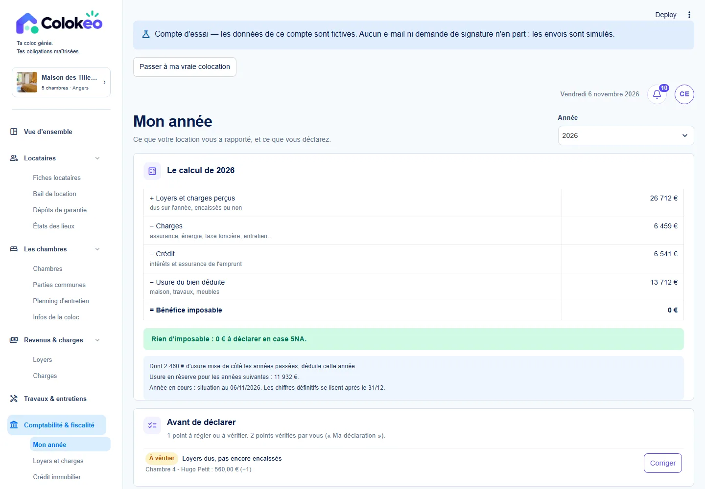
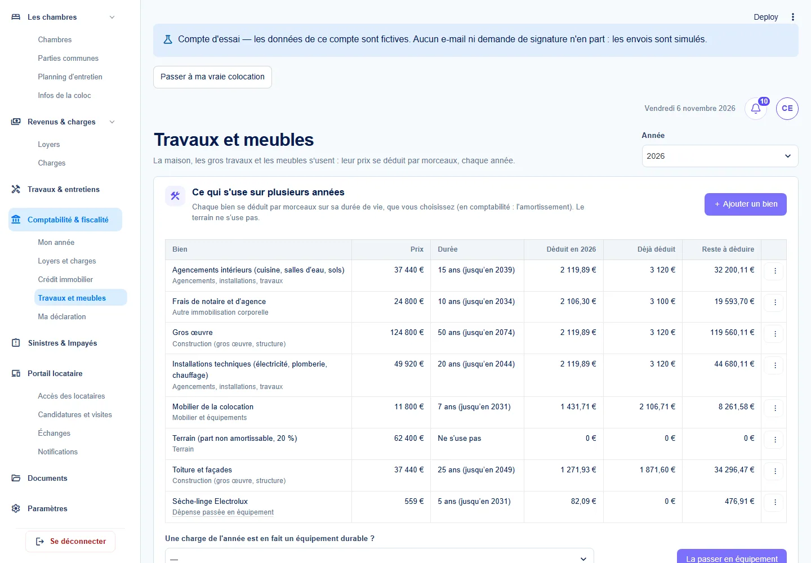
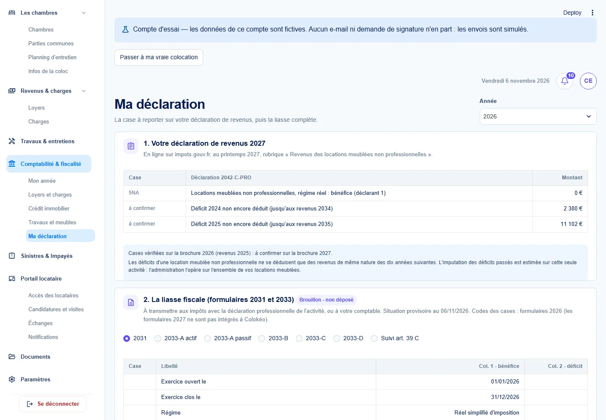
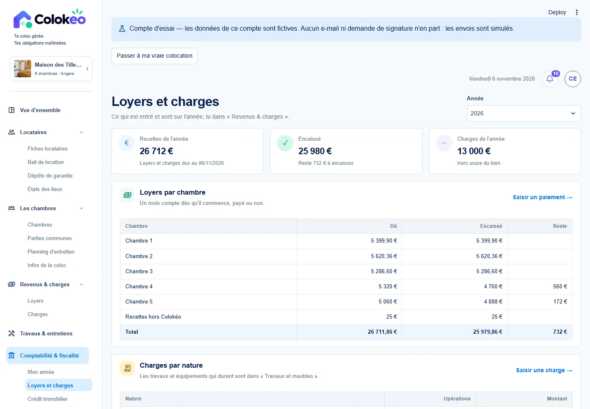
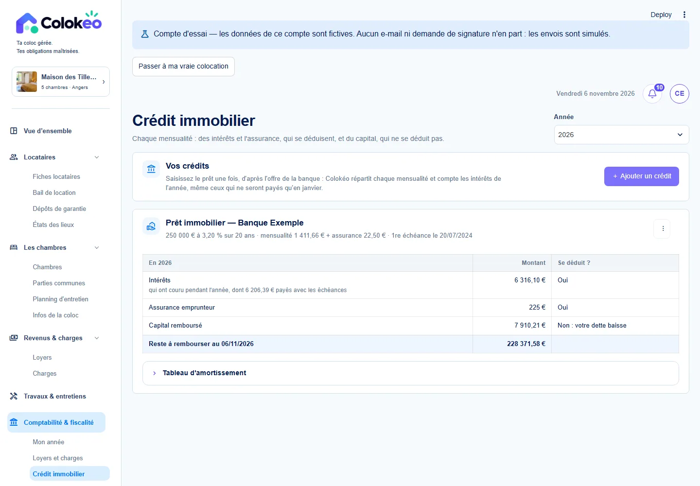

Comptabilité et fiscalité
Préparer l’année LMNP
Rassembler les recettes, dépenses, crédits et immobilisations au fil de l’eau.

01
L’année et les écritures
Tu ne veux pas repartir de zéro en fin d’année pour retrouver l’origine des chiffres.
- Vue de l’année, loyers par chambre et charges par nature
- Opérations hors Colokéo et point de départ comptable
- Journal, balance, règles appliquées, vérifications et provenance des montants
- Exports et dossier pour l’expert-comptable selon l’état de l’exercice
02
Crédits, travaux et mobilier
Tu veux séparer les dépenses courantes des éléments suivis sur plusieurs années.
- Suivi des crédits, échéanciers et postes d’intérêts
- Biens, travaux, meubles et équipements durables
- Distinction dépense/immobilisation, correction et tableaux d’amortissement

03
Déclaration et clôture
Tu veux savoir ce qu’il reste à vérifier avant de valider ou de transmettre ton dossier.
- Éléments déclaratifs et brouillons 2031/2033 selon le dossier
- Informations du foyer, répartition et origine des montants
- Validation de la préparation et enregistrement d’un dépôt déjà effectué
- Clôture, régularisations et FEC lorsque les conditions de l’exercice sont réunies

Autres vues du produit




La déclaration est préparée pour vérification. L’enregistrement d’un dépôt ne constitue pas une télétransmission.
Prends la main sur la Maison des Tilleuls.
Choisis les données fictives à l’inscription pour essayer les parcours avec une colocation déjà renseignée.